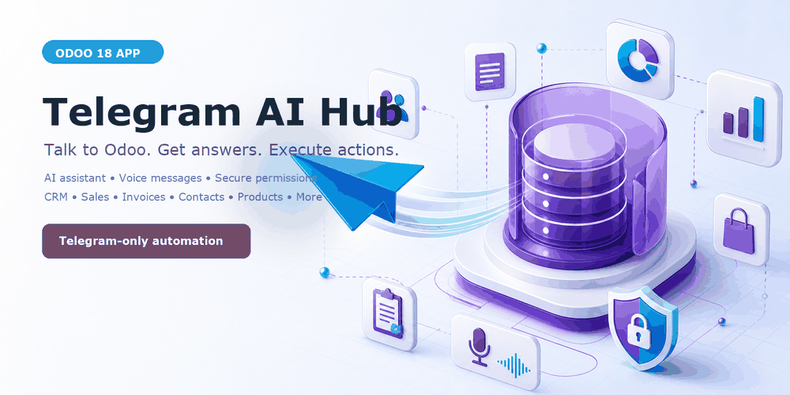
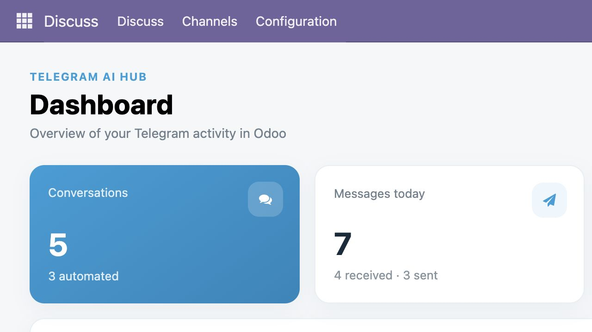
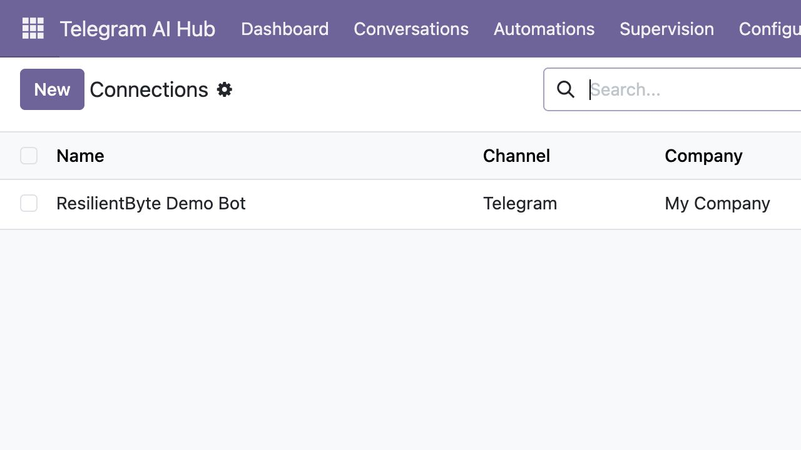
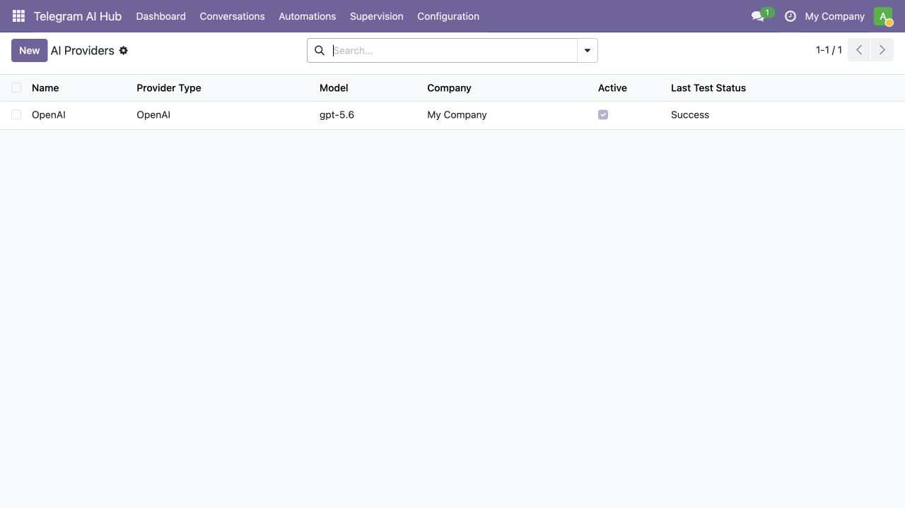
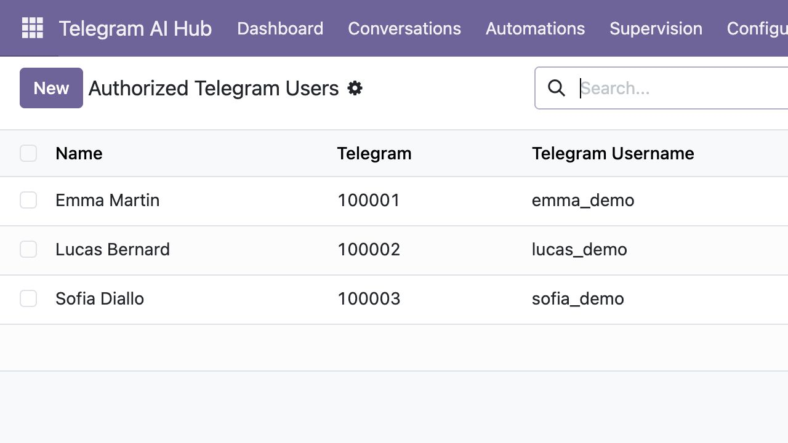
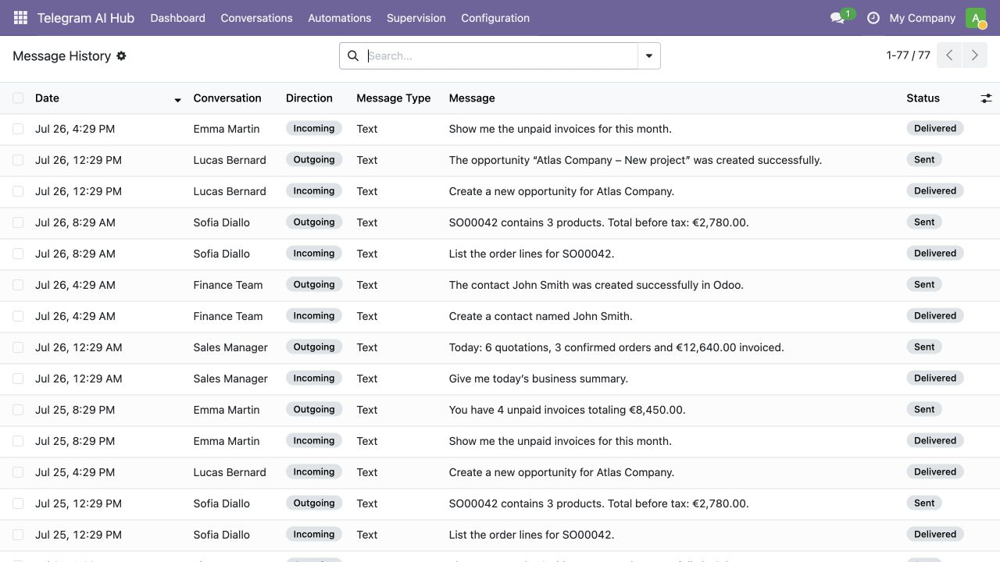
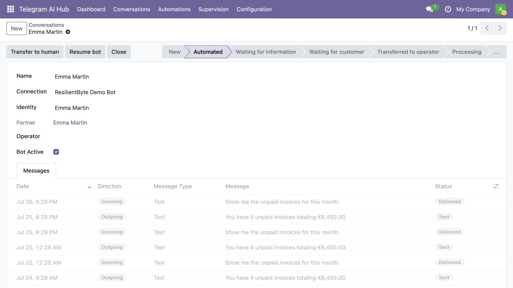
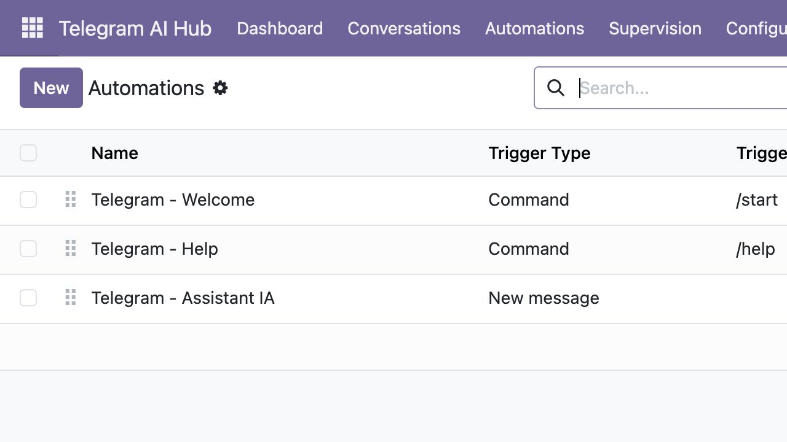

Guided setup from Odoo

A step-by-step wizard guides the administrator through BotFather, token verification, webhook installation, OpenAI configuration and first-user authorization.

A secure, Telegram-only AI assistant that answers business questions, retrieves live Odoo data and executes approved actions using natural language or voice messages.
English narration and subtitles — setup, permissions, AI, business tools, dashboard, conversations and audit history.
OpenAI Responses API with secure Odoo tool calling and configurable models.
Native Telegram Bot API, webhook delivery, formatted replies and voice transcription.
Each Telegram user is mapped to an internal Odoo user and explicit business permissions.

Monitor conversations, incoming and outgoing messages, authorized users, weekly activity, processing success rate and recent errors.
A step-by-step wizard guides the administrator through BotFather, token verification, webhook installation, OpenAI configuration and first-user authorization.



Authenticate with the permanent Telegram numeric ID. Apply the linked Odoo user's record rules plus explicit rights for contacts, CRM, sales and invoices.



Transfer a conversation to an operator, resume the bot, track states and inspect message direction, type, status, content, date and processing errors.

Build command, keyword, message, button and manual workflows with ordered steps, conditions, templates, approved Odoo actions and AI assistant execution.
This application requires a Telegram bot and an OpenAI API key supplied by the customer. Messages submitted to the AI assistant are sent to the configured AI endpoint for processing. Telegram and OpenAI usage fees, terms and privacy policies are separate from this app purchase. Administrators must inform users and obtain any consent required by applicable law.
Odoo 19 Community and Enterprise • Odoo.sh and On-Premise • Python server module
Support: contact@kone-adama.com